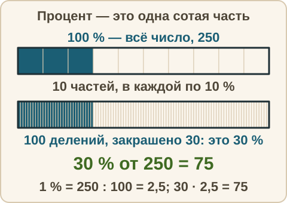
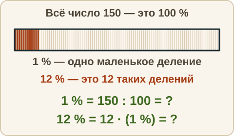
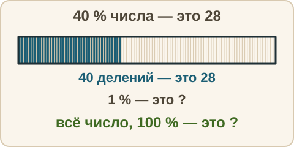

Математика: база · занятие 13Процент
Цель: ты знаешь, что 1 % — это одна сотая часть, находишь процент от числа и число по его проценту. Это основа заданий 1–5 ОГЭ (скидки, надбавки) и текстовых задач. Ответы и подсказки спрятаны: сначала реши сам, потом нажми кнопку.
Как записывать ответ. Число — целое число. Дробь — через черту и сокращённая до конца, например 3/4. Десятичная дробь — с запятой, например 3,25. Проценты записывай просто числом, без знака %.
Вспомнить
Без подсказок, сразу проверка. Отмечай, на чём споткнулся, — в журнал.
- 0,6 + 0,25
- Запиши 3/4 десятичной дробью.
- 2,5 · 4
- 1/2 + 1/3
- 7 − 12 + 3
- 100 : 8 — десятичной дробью
Беглость: сотая часть
Игра «сотая часть»: сколько процентов от какого числа. Приём: 10 % — это одна десятая часть числа. Ошибся — пример вернётся: попробуй ещё раз. Без таймера.
- 10 % от 60
- 50 % от 18
- 25 % от 40
- 1 % от 800
- 100 % от 35
- 75 % от 100
Теперь «туда и обратно»: проценты и десятичные дроби.
- 0,3 — это сколько процентов?
- 45 % — это какая десятичная дробь?
- 7 % — какая десятичная дробь?
Правило
Процент. Процент — это одна сотая часть числа. Знак % читается «процент». Запись: 1 % = 1/100 = 0,01. Значит, 100 % — это всё число целиком, 50 % — половина, 25 % — четверть, 10 % — десятая часть. Процент всегда считают от какого-то числа: оно и есть 100 %.
Три вопроса про проценты (сегодня первые два).
1. Найти процент от числа. Сколько будет p % от числа A? Сначала узнаём 1 %: A : 100. Потом умножаем на p. Формула: p % от A равно A : 100 · p. Здесь A — всё число (то, от чего берём процент), p — сколько процентов нужно взять, результат — часть числа в тех же единицах, что и A (рубли — рубли, килограммы — килограммы).
2. Найти число по его проценту. Известно, что p % числа равны B. Находим 1 %: B : p. Потом всё число — это 100 %: (B : p) · 100. Здесь B — известная часть, p — сколько процентов она составляет, результат — всё число.

Из жизни. В магазине скидка 10 % на товар за 1000 рублей. 1 % — это 10 рублей, 10 % — это 100 рублей. Скидка — 100 рублей.
Разобранный пример
1. Найти 30 % от 250.
- 1 % от 250: 250 : 100 = 2,5.
- 30 % — это 30 таких частей: 2,5 · 30 = 75.
- Ответ: 75. Проверка прикидкой: 30 % — чуть меньше трети, а треть от 250 — около 83. Число 75 похоже на правду.
2. 15 % числа равны 45. Найти число.
- 15 % — это 45. Значит, 1 % — это 45 : 15 = 3.
- Всё число — это 100 %, то есть 3 · 100 = 300.
- Ответ: 300. Проверка: 15 % от 300 = 3 · 15 = 45. Сходится.
С подсказкой
Решай сам. Подсказку открывай, только если застрял.
- 12 % от 150.
- 40 % числа равны 28. Найди число.


Сам
Ответ — число. Два раза не сошлось — появится кнопка «Показать решение».
- 20 % от 50
- 5 % от 240
- 60 % числа равны 36. Найди число.
- 8 % от 125
- 25 % числа равны 30. Найди число.
Ловушка
Ловушка. Найти 30 % от 90. Многие пишут ответ 30: «тридцать процентов — значит тридцать». Но 30 — это сколько процентов, а не сколько штук. Проверка: 50 % от 90 — это половина, 45. А 30 % — меньше половины, то есть меньше 45. Значит, ответ не сошёлся. Правильно: 1 % от 90 — это 0,9, а 30 % — это 0,9 · 30 = 27. Проверь себя: процент считаю от какого числа, и мой ответ меньше или больше половины?
Смесь
Вперемешку: проценты, дроби, десятичные дроби, порядок действий. Записывай шаги. Это 10 заданий. Результат смотри в строке «Верно: N из 10» под заданиями.
- 10 % от 70
- 35 % от 200
- 10 % числа равны 6. Найди число.
- 3/5 + 1/5
- 2,4 · 5
- 15 % от 60
- 3/4 · 2/3
- 50 % числа равны 17. Найди число.
- 6 − 4 · (3 − 5)
- Скидка 10 % на товар ценой 800 рублей. Сколько рублей составляет скидка?
Журнал
Запиши 1–3 строки: «что перепутал → как проверить». Пример формы: «взял число процентов как ответ → проверяю: сколько будет 50 % и 100 % от этого числа, и сравниваю». Там же отметь результат смеси из строки «Верно: N из 10».
- …